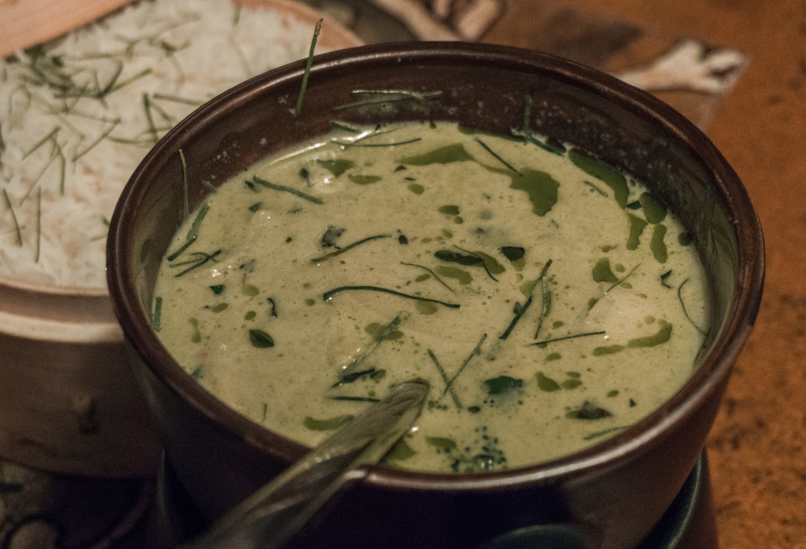

Thai Green Chicken Curry


Thai green chicken curry is a fragrant and creamy dish made with tender chicken simmered in a rich coconut milk
sauce infused with green curry paste, garlic, ginger, and fresh herbs. Packed with vegetables like bamboo shoots,
bell peppers, and Thai basil, it delivers a perfect balance of spicy, sweet, and savory flavors, traditionally served with
steamed jasmine rice.